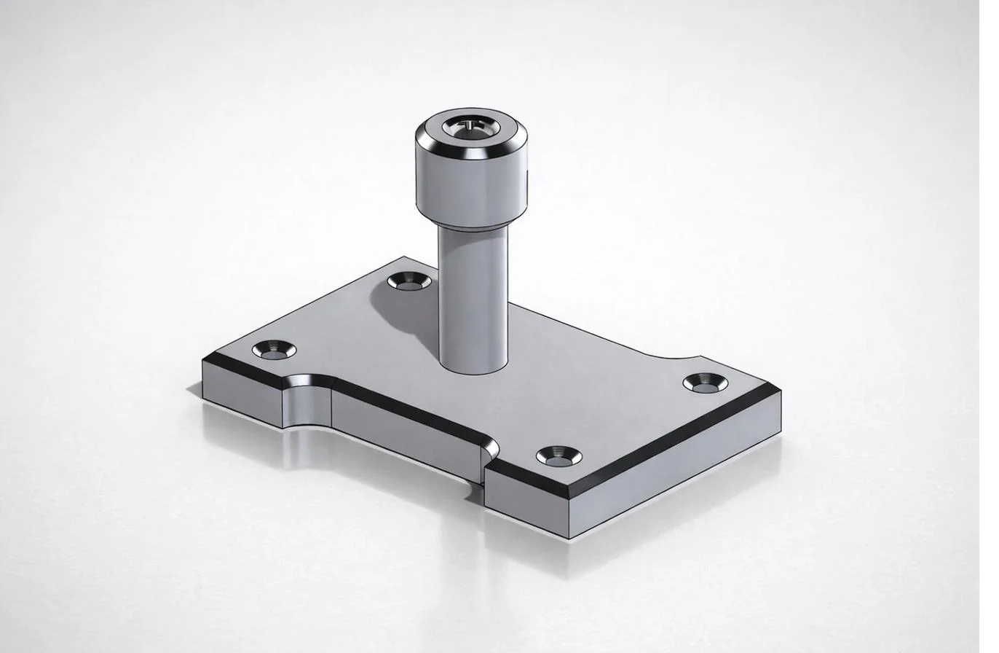
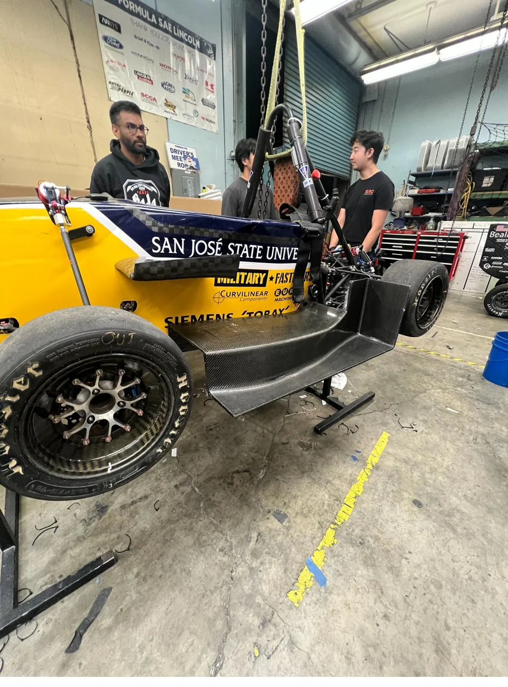

Mechanical Engineering · BYU–Idaho
Ready for any challenge. Driven by root-cause analysis.
I approach technical challenges with a strict diagnostic mindset. Whether it's diagnosing a system failure, optimizing a process, or building a physical mechanism, I focus on identifying the root cause and executing the solution.
ObserveDiagnoseModelBuildVerifyDocument
Featured work
Selected Projects
A cross-section of mechanical design, fabrication, and hardware integration work from coursework and independent builds.
View all projects →Thermogate
A temperature-actuated gate system with live sensor feedback, interior wiring management, and a labeled component layout.
±2°C setpoint target
Planetary Gear System
Full SolidWorks design and physical assembly of a planetary gearbox, including exploded-view documentation.
4:1 gear reduction
Automated Rat Trap
A self-resetting trap built into a briefcase-style case, with an electronic trigger, push-rod release, and locking hinges.
No-touch disposal concept
Hanger — CAD to Part
Precision SolidWorks model of a hanger component with physical prototype verification, demonstrating CAD-to-part workflow.
0.001 in tolerance
Mailbox Fabrication
A fabricated sheet-metal mailbox built to dimensional tolerances, demonstrating metal forming and fastening techniques.
±1/32 in fabrication
FSAE Wheel & Suspension
Contributed to wheel assembly, suspension geometry, and chassis work on a student-built Formula SAE race car.
Subsystem integration
Laser-Cut Steel Tiger
Pattern designed in SolidWorks, laid out in sheet metal, and precision laser cut. Demonstrates the full CAD-to-fabrication workflow for flat-pattern manufacturing.
1/4 in steel artworkHow I work
Built on a diagnostic mindset.
Every project starts the same way: with a question. What's actually failing? What does the system need? I don't build until I understand the problem — and I don't stop until the data confirms the fix.
Start with the system
Understand the full context before touching any component. Symptoms live at the surface; causes live in the system.
Measure before cutting
Quantify the problem. Data first, assumptions last. A number beats an opinion every time.
Build to learn
Physical prototypes reveal constraints that CAD models hide. Iteration is the process, not the failure.
Document the deviation
Anomalies are information. Record everything — the deviation you skip today becomes the root cause you chase tomorrow.
Academic work
Study Papers
Written analyses, design proposals, and engineering investigations from coursework.
View all studies →ME-113 · ThermodynamicsWaste Heat Recovery from IndustryRead →ME 111 · Fluid DynamicsLaminar & Turbulent Flow StudyRead →ME 380 · Product DesignCPR PulseMate Device ProposalRead →Mechanical DesignElectronic Fin DesignRead →ME 370 · Machine DesignElastic Behaviour of Rigidly Constrained StructureRead →